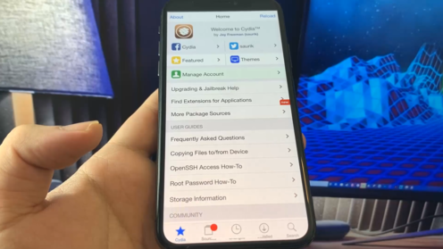

No mobile device detected
Please open this website on your iPhone or mobile device.

When we think about the term, security and data privacy, the first organization that comes to our mind is Apple. Their continued focus on the aspects mentioned has made iOS the most secure platform in the world of smartphones. A major population of celebrities carries iPhones in their pockets which is an ode to the commitment they put in over the years for this cause. Every good thing in the world comes at a price.
In the case of iOS users, it is a fact that they cannot modify their devices with third-party applications or tools. A simple example of this is Vanced Manager which allows android users to access YouTube premium and YouTube Music for no cost. You cannot enjoy the benefits of these third-party apps when you are an iOS user. This is just one example. The only option for people to enhance the iOS is by iPhone jailbreak. However, the release of iOS 17 has made life difficult for people who have jailbroken their devices in the past. There are no official developers who have claimed an official jailbreak but the best thing is, with the use of this jailbreak tool, it is still possible. This one of the best Jailbreak solutions you can find right now.
As discussed before, we have seen that Apple does not let users install software that is unrecognized by the company. When compare to android users, they feel powerless and are not in full control of their devices. This is how apple keeps control of their brand, but the Jailbreak tool allows users to break these barriers giving users a phone where they would be able to download third-party apps which are not recognized by the company. By using the jailbreak tool, users can enhance the looks of their devices. Not only this, the functionality of their devices increases as well.

Smartphones have become synonymous with our lifestyle and so has concern for privacy and security. This article indeed provides information about how to Jailbreak iOS 17, there is no doubt that Apple has revolutionized the tech market with the iOS 17. Radical changes like this in the operating system have not been made since the launch of iOS 7 and this has made life tough for the developers who had previously claimed official stake for the Jailbreak tool. The release of iOS came with major changes to the software. A few of these upgrades included enhanced security, introduction SharePlay, Text Identification on photos, FaceTime to name a few. These updates brought have brought major questions to the minds of users about whether a Jailbreak is still possible. But the answer is a resounding YES. An iOS 17 Jailbreak is a reality.
1) The first step is to select the device model and version of iOS.
2) After doing this, click on Start Jailbreak and confirm you are ready to do it.
3) The package will start processing.
4) Once the processing bar reaches the end you will be asked to download and install two jailbreak apps and completing the instructions.
5) By downloading these two apps, you will have downloaded Jailbreak on your iOS 17 device
6) The two apps which have to be downloaded are free and safe because they directly come from the official Appstore.
7) Download, install jailbreak apps, and run both of them for 30 seconds.
8) While running the two Cydia apps you will be given Jailbreak.
Jailbreaking the ios device is very popular nowadays. It has been that way for quite some time now, and it doesn't look like it will change anytime soon. Jailbreaking your iOS device enables you to install applications from outside of the App Store, which can be both a blessing and a curse. In this article, we'll discuss� jailbreak tool� in detail, so you know what to expect when taking the plunge yourself.
Jailbreaking is a process that enables you to bypass some of Apple's limitations on its iOS operating system. Jailbroken iPhones can still receive software updates from Apple, so don't freak out if your iPhone gets updated. But then, it has an untethered jailbreak (meaning no computer connection is needed).
A jailbroken device opens up many new possibilities thanks to jailbreak tool, extensions, and applications not available through official channels. You may also end up getting apps that could be considered malware or spyware because they will access private data like contacts lists without asking for permission first. So before opting for this path, make sure you know what exactly are you gaining by doing so, as well as the potential risks involved.
To jailbreak ios 17, the first thing you need is an iOS device running version ios 17. You also have to obtain certain software from some less-than-official sources, so if there's even a small chance that this process may violate your warranty, don't do it.
Another important consideration before going ahead with this procedure is whether you're going to be jailbreaking the iPhone of somebody else – say, for example, mom or dad – then make sure they give their permission first because once done, nothing can bring back what was lost. There are three different ways to do this: using a computer and Cydia Impactor, via Apple's own iTunes software, or using iFunbox.
You can find it on Google Play Store, Windows Phone store and many other app stores, just like iTunes for music.
2. You'll have a chance to customize your device with jailbreak tweaks
It means that you can use software extensions and applications which are not available through the official channels
3. You'll have the ability to install custom themes
It means that you can apply a new look to your device. It is very popular among iOS users, especially because it allows them to do this without requiring any special skills or knowledge, so it's simple.
4. You'll be able to run emulators that are not available through the App Store
Even if you're already a fan of ios 17 games and apps, having this jailbreak means that your favorite retro titles will always be there for you at any time. The emulator is an app or program designed to make one computer system behave like another by providing software with all the functionality required for its function to operate as such.
The jailbreak features allow you to use emulators for old consoles, such as Nintendo 64 and Sega Genesis. The� jailbreak iPhone and iPad jailbreak� will take between five to ten minutes in total, depending on your computer's speed.
5. You'll have the ability to create folders on your home screen
It is very useful because it gives you an easy way of organizing all those apps. Usually, Apple limits what can be done with app icons, so this� ios jailbreak� tweak will provide you with much more freedom in that regard.
6. You'll be able to remove the app badges (those red circles showing you how many apps have new notifications)
Even if many available ios 17 jailbreak tweaks will allow you to do this, it's not always easy because some notification appears every time something is in motion on your device. So to get rid of these badge alerts for good, all you need is a small piece of software with an intuitive interface. The� jailbreak� will help you to get rid of these app badges by simply deleting them.
7. You'll have the ability to create custom Lock Screen layouts
It means that you can switch things up a bit without modifying your device's ROM. The ios 17 jailbreak will allow you to change your ios 17 lock screen and use widgets for apps like Stocks, Weather or Calendar.
8. You'll be able to install jailbreak tweaks and extensions on your iOS device
It is a very powerful tool that can turn your ios 17 into something completely different. There are over 20,000 available ios 17 jailbreak apps that will allow you to do things like changing the default keyboard or enable multitasking.
9. You'll be able to use iMessage apps
These are mini-programs that let you do various things when sending messages. For example, there is an app for adding images or videos to the chat window and even games like chess or Tetris. It also lets you see your friends' battery status in real-time. The� jailbreak ios 17� will help you use iMessage apps.
10. You can add voice control support on unsupported devices
The� cydia ios 17� will help you to add voice control support on unsupported devices. It doesn't come preinstalled for some reason, so it needs to be done manually using certain apps or through the settings menu. It usually requires deep knowledge about coding, which makes things challenging but worth trying.
11. You can install custom keyboards
You don't need a jailbreak ios 17 for this, but it's worth mentioning as it makes typing much faster and easier. The best part is that the keyboard looks completely different from Apple's offering, which gives your device an entirely new feel.
iOS 17 is the latest and greatest major release of the iOS mobile platform designed for the iPhone, iPad and iPod Touch devices. It was introduced at the annual Worldwide Developers Conference (WDC) on June 7th, 2021 as a replacement to iOS 14, and has since then been available to the general public on September 21st, 2021.
The launch of iOS 17 brought some interesting features, and user reviews of the new version are overwhelmingly positive. With the success of iOS 17, Apple Techs are already onto the next project while users explore the new operating system. One of the most requested iPhone application upgrades was the ability to edit videos. Apple has finally introduced the ios 17 features that allow users to trim, move and add text to their videos.
A few advanced users of iOS 17 might find they want more control over their device and iOS 17. To get this advanced super-user level of control, you will need to Jailbreak the operating system.
We are not talking about literally jailbreaking an iOS device out of prison. Jailbreaking refers to a term where you unlock the device's full user potential by circumventing Apple admin controls on iOS 17.
This article unpacks everything you need to know about iOS 17 jailbreak, so keep reading to find out more.� We will also include a strategy for jailbreaking your iPad or iPhone using cutting-edge software.
All mobile operating systems, regardless of whether they are Android or Apple-based, provide users with secure and powerful default software for their smart devices.
The OS allows users to tailor it to their customized needs, making it easy to manage and operate. Unfortunately, Apple and Android restrict your admin access to the file system, limiting the advanced functions of the device.
If you are an experienced advanced user of iOS-based mobile devices, you can get more out of the system by jailbreaking the device.
The default settings on iOS mean you can't install custom apps that aren't available in the Apple App Store, and you cant remove some pre-installed software.
With Android devices, users Root them to gain super-user administrator access over the operating system. With Apple devices, the action is jailbreaking. We think jailbreaking sounds way cooler, dont you?.
It's important to note Apple prioritizes security protocols across all its devices. Its for this reason that the system software and firmware come with such high-level security mechanisms.
Apple operates on a closed-system model for its iPads and iPhones, restricting user admin access. To remove those barriers on your device, we will use jailbreaking software and an external device like a PC or laptop.
Jailbreaking your iOS 17 device gives you super-user administrator access and some interesting options on accessing the restricted parts of your iPhone or iPad.
Here are some of the top reasons why you would want to jailbreak your device.
#1 Install Custom Applications:
If you are an app developer, jailbreaking iOS 17 lets you install custom applications to your device. Apple banned plenty of apps over the years, and if you want to use one of them, jailbreaking your phone lets you circumvent these protocols, successfully installing the app on your device.
#2 Remove Pre-Installed Apps:
Don't you hate those annoying standard apps that come pre-installed with your iPad or iPhone? Trying to delete them results in error messages that you don't have the required administrator access to complete the task. By jailbreaking your iOS 17 device, you can remove these unwanted apps.
#3 Customize Your Control Center:
By jailbreaking your iOS 17 device, you get the ability to make customizations to your control center. Use this feature to create custom shortcuts and loads of other cool stuff.
Speak to some techs, and they will tell you it's impossible to jailbreak your iOS 17 device. The reality is there are several ways to complete your jailbreak successfully.
All you need is the right software to jailbreak your Apple device. There are plenty of tools available online to help you with the task.
Provided you have the right tools and an approved method; you should have no issues jailbreaking your device. In a few minutes, you could be enjoying the advanced super-user administrator functions of your iPad or iPhone.
To understand which devices will work with jailbreak software, we need to look at the devices supporting iOS 17.
The latest edition of iOS 17 for mobile devices is available on the following Apple devices:
iPhone 6s and up, iPod Touch (7th Gen),iPad (5th Gen), Air 2, Mini 4, Pro (1st Gen), and up.
You need to note that the tools available online for jailbreaking iOS 13 or iOS 13.5 might not work on your iOS 17 device. Apple continually updates security algorithms, patching any vulnerabilities.
Therefore, if you have an older version of jailbreak software, check with the developer to see if they have an updated version for iOS 17.
There are dozens of developers offering jailbreak software for iOS 17. Some developers take longer than others to update their software offerings.
Therefore, if your developer doesn't offer recent jailbreak software for iOS 17, it's time to find another provider with up-to-date products.
We scoured the internet looking for the best jailbreak software. We settled that our software is the best option.
After reading through our guide, you can see that jailbreaking your iPhone or iPad is easier than you think. You could gain super-administrator access on your phone in a few minutes following the easy steps mentioned above.
Why conform to what Apple thinks you should do with your device? You paid for it, and it's your property; you should be able to do anything you want with it. Use the ideas in this post to gain freedom for your mobile device, and break free from the limitations of iOS 17.